CODING AGENTS AS PIXEL WORLD MODELS
traex/GPT-6.1-Sol · common50_0033
点击播放 · 原生 RGB 像素
逐轮保存的候选
回放视频、检查图与代码变化。
每份候选均可单独播放。实际图片检查记录在下方工具轨迹中。
候选 01播放与检查图
点击播放 · 原生 RGB 像素

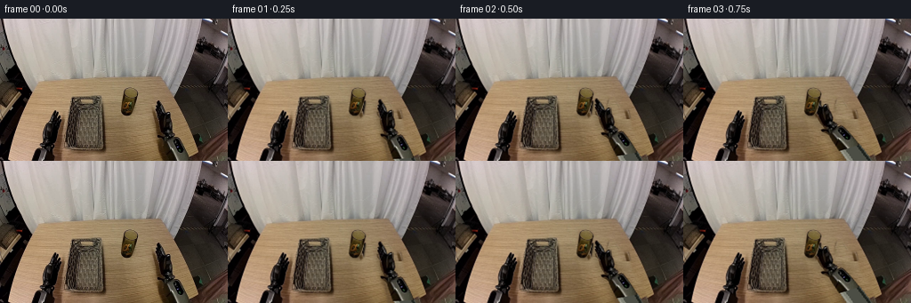
展开代码变化
--- 上一保存版本
+++ 本次保存版本
@@ -0,0 +1,189 @@
+"""Pixel-based, rigid-body pick-and-place animation from the supplied image."""
+from pathlib import Path
+import math
+import numpy as np
+from PIL import Image, ImageDraw, ImageFilter
+import artifact_io
+
+ROOT=Path(__file__).resolve().parent
+W,H=256,160
+S=4
+original=Image.open(ROOT/'first_frame.png').convert('RGB')
+src=np.asarray(original).astype(float)
+
+def polygon_mask(points, size=(W,H), blur=0):
+ m=Image.new('L',(size[0]*S,size[1]*S))
+ ImageDraw.Draw(m).polygon([(round(x*S),round(y*S)) for x,y in points],fill=255)
+ if blur: m=m.filter(ImageFilter.GaussianBlur(blur*S))
+ return m.resize(size,Image.Resampling.LANCZOS)
+
+# All outlines are hand-defined from the input image; no external assets.
+arm_outline=[(177.2,91.8),(179,92.5),(182.2,97.8),(184,101.2),
+ (185.6,107.8),(187.3,105.8),(190.4,104.7),(191.9,105.4),
+ (192,111.3),(193.1,115.2),(193.5,121.8),(191.8,125.5),
+ (194.9,127.9),(195.9,130.8),(200.8,133.6),(204.1,138.9),
+ (208.4,148.8),(213.1,160),(189.6,160),(187.3,152),
+ (185.2,145.7),(184,139.4),(181.5,136.5),(177.2,133.3),
+ (176.7,131),(181.2,131),(180.6,127.7),(179.1,124.9),
+ (177.3,118.6),(176.9,112.5),(174.8,109.8),(174.6,106.2),
+ (176.2,106.7),(175.3,101.9),(174.9,99.5),(176.1,98.1),
+ (177.5,100.4),(176.8,96.8),(175.9,95.5),(176.4,93.5)]
+cup_outline=[(140,80.2),(142.8,78.2),(146.7,77.7),(150.8,79),
+ (153.8,81.4),(155,84.4),(153.8,90.3),(152.4,96.8),
+ (150.4,104.2),(148.5,107.2),(144.8,109.1),(140.4,108.9),
+ (137.5,107.1),(136.1,104.2),(136.6,99.7),(137.8,93.5),
+ (138.6,87.8),(139,83.5)]
+arm_mask=polygon_mask(arm_outline)
+cup_mask=polygon_mask(cup_outline)
+
+# Restore the exposed wood under the objects with same-row wood-grain samples.
+# Small feathered texture patches match the stationary tabletop illumination.
+clean=src.copy()
+yy,xx=np.mgrid[:H,:W]
+# The right forearm is over the angled table edge at the bottom of the image.
+table_boundary=223-(yy-148)*(27/12)
+is_table=(yy <= 148) | (xx < table_boundary)
+
+def texture_patch(region, donor_dx):
+ global clean
+ sx=np.clip(xx+donor_dx,0,W-1)
+ patch=src[yy,sx].copy()
+ # Match local table shading; color change across the top is very small.
+ patch+= np.array([0.8,0.8,0.5])
+ alpha=np.asarray(region).astype(float)/255
+ clean=clean*(1-alpha[...,None])+np.clip(patch,0,255)*alpha[...,None]
+
+# Cup shadow and silhouette use unoccupied tabletop immediately to the right.
+erase_cup=polygon_mask([(137.8,77),(153,77.4),(156.3,82),(155,92),
+ (152.5,108.5),(148.9,112),(138.3,111.7),(133.8,107),
+ (134.1,101),(136.1,89)],blur=.9)
+texture_patch(erase_cup,24)
+# Erase hand plus cast shadow: unobstructed wood is available to its left.
+erase_arm=polygon_mask([(172.3,92),(179.1,90),(185.8,101),
+ (193.8,103),(197.1,118),(198.7,126),(205.1,132),
+ (211.8,144),(216.7,160),(179.5,160),(177,145),
+ (174.8,137),(171.3,120),(170.1,105)],blur=1.1)
+a=np.asarray(erase_arm)/255.
+patch=src[yy,np.clip(xx-42,0,W-1)].copy()
+# Use a second sampling offset above the basket: x-42 here is clean.
+patch[yy<113]=src[yy[yy<113],np.clip(xx[yy<113]-19,0,W-1)]
+# A planar wood edge remains fixed when the forearm swings away.
+floor=src[yy,np.clip(xx+29,0,W-1)].copy()
+# Use the same undisturbed floor beyond the original tabletop corner.
+patch=np.where(is_table[...,None],patch,floor)
+clean=clean*(1-a[...,None])+patch*a[...,None]
+background=Image.fromarray(np.uint8(np.clip(clean,0,255))).resize((W*S,H*S),Image.Resampling.BICUBIC)
+
+# Rigid forearm: extend the same metal housing past the source image so that
+# no cut-off edge can enter the view during rotation. The extension is hidden
+# offscreen in the initial posture.
+canvas_size=(320,270)
+robot=Image.new('RGBA',canvas_size)
+robot.paste(original,(0,0),arm_mask)
+rd=ImageDraw.Draw(robot)
+# Housing longitudinal edges at the image boundary, extending below it.
+rd.polygon([(190,159),(213,159),(250,258),(227,267)], fill=(76,78,69,255))
+rd.polygon([(190,159),(195,159),(233,264),(227,267)], fill=(128,130,117,255))
+rd.line([(191,160),(228,266)], fill=(151,150,137,255), width=2)
+rd.line([(211,160),(248,260)], fill=(32,36,31,255), width=3)
+# Repaste the observed portion over the generated hidden continuation.
+robot.paste(original,(0,0),arm_mask)
+robot=robot.resize((canvas_size[0]*S,canvas_size[1]*S),Image.Resampling.BICUBIC)
+
+cup=Image.new('RGBA',(W,H));cup.paste(original,(0,0),cup_mask)
+cup=cup.resize((W*S,H*S),Image.Resampling.BICUBIC)
+thumb_outline=[(188.4,105.7),(190.6,104.7),(192,105.4),(191.9,112),
+ (192.8,116),(192.5,121),(190.4,124.8),(187.4,124.7),
+ (186.3,121),(187.1,116),(187.4,110.4)]
+thumb_mask=polygon_mask(thumb_outline)
+thumb=Image.new('RGBA',(W,H));thumb.paste(original,(0,0),thumb_mask)
+thumb=thumb.resize((W*S,H*S),Image.Resampling.BICUBIC)
+
+# Image-plane rigid transformations; shape, markings and metal details remain
+# fixed. A wrist rotation closes only the solid thumb element, not the arm.
+pivot=(190.,133.)
+def rigid(image, target, degrees, source_pivot=pivot):
+ t=math.radians(degrees); c,s=math.cos(t),math.sin(t)
+ px,py=source_pivot;tx,ty=target
+ # Inverse map from the output into the observed texture.
+ mat=(c,s,(px-c*tx-s*ty)*S,-s,c,(py+s*tx-c*ty)*S)
+ return image.transform((W*S,H*S),Image.Transform.AFFINE,mat,
+ resample=Image.Resampling.BICUBIC)
+
+def move_cup(dx,dy):
+ return cup.transform((W*S,H*S),Image.Transform.AFFINE,
+ (1,0,-dx*S,0,1,-dy*S),Image.Resampling.BICUBIC)
+
+def thumb_pose(target, angle, closure):
+ # Local rotation about the thumb hinge, then the common wrist transform.
+ hinge=(189.7,123.)
+ t=math.radians(angle); c,s=math.cos(t),math.sin(t)
+ hx,hy=hinge; px,py=pivot
+ th=(target[0]+c*(hx-px)-s*(hy-py),target[1]+s*(hx-px)+c*(hy-py))
+ return rigid(thumb,th,angle-closure,hinge)
+
+def ellipse_layer(cx,cy,rx,ry,opacity,blur):
+ m=Image.new('L',(W*S,H*S));d=ImageDraw.Draw(m)
+ d.ellipse(((cx-rx)*S,(cy-ry)*S,(cx+rx)*S,(cy+ry)*S),fill=opacity)
+ m=m.filter(ImageFilter.GaussianBlur(blur*S))
+ shadow=Image.new('RGBA',(W*S,H*S),(45,33,13,0));shadow.putalpha(m)
+ return shadow
+
+# Contact at frame 4, squeeze, lift, translate over basket, lower and release.
+# Cup translations keep its upright cylindrical silhouette unchanged.
+poses=[
+ # wrist x, wrist y, wrist angle, cup dx, cup dy, thumb closure, lift
+ (190,133,0,0,0,0,0),
+ (185,131,-3,0,0,0,0),
+ (177,128,-10,0,0,0,0),
+ (168,123,-17,0,0,0,0),
+ (162,120,-20,0,0,0,0),
+ (162,120,-20,0,0,9,0),
+ (161,112,-20,-1,-8,9,8),
+ (159,105,-20,-3,-15,9,15),
+ (149,106,-20,-13,-14,9,21),
+ (135,109,-20,-27,-11,9,21),
+ (121,116,-20,-41,-4,9,19),
+ (113,126,-20,-49,6,9,17),
+ (113,136,-20,-49,16,9,7),
+ (113,143,-20,-49,23,9,0),
+ (113,143,-20,-49,23,7,0),
+ (117,140,-17,-49,23,0,0),
+ (135,135,-12,-49,23,0,0),
+ (158,132,-7,-49,23,0,0),
+ (181,132,-2,-49,23,0,0),
+ (190,133,0,-49,23,0,0),
+]
+frames=[np.asarray(original,dtype=np.uint8)]
+for i,p in enumerate(poses[1:],start=1):
+ wx,wy,angle,dx,dy,closure,lift=p
+ out=background.convert('RGBA')
+ # Cast contact shadow stays on the supporting plane and fades while lifted.
+ # For the placement half of the motion the plane is the woven tray floor.
+ if i<8:
+ shadow_x=143+dx;shadow_y=109
+ else:
+ shadow_x=143+dx;shadow_y=108+dy+lift
+ if i>=13:shadow_y=132
+ out=Image.alpha_composite(out,ellipse_layer(shadow_x,shadow_y,7.4+lift*.10,
+ 2.7+lift*.035,int(75-lift*1.8),1.2+lift*.04))
+ # Consistent faint hand shadow on the tabletop, excluding the basket so its
+ # weave remains readable. It is distinct from the rigid visible surfaces.
+ arm=rigid(robot,(wx,wy),angle)
+ shadow_alpha=arm.getchannel('A').filter(ImageFilter.GaussianBlur(2.6*S))
+ shadow_alpha=shadow_alpha.point(lambda z:int(z*.19))
+ shifted=Image.new('L',(W*S,H*S));shifted.paste(shadow_alpha,(-3*S,4*S))
+ arm_shadow=Image.new('RGBA',(W*S,H*S),(48,36,16,0));arm_shadow.putalpha(shifted)
+ out=Image.alpha_composite(out,arm_shadow)
+ out=Image.alpha_composite(out,arm)
+ out=Image.alpha_composite(out,move_cup(dx,dy))
+ # Thumb touches the near/right side of the glass, while the long jaws are
+ # behind it. This ordering makes the glass visibly enclosed in the grip.
+ out=Image.alpha_composite(out,thumb_pose((wx,wy),angle,closure))
+ out=out.convert('RGB').resize((W,H),Image.Resampling.LANCZOS)
+ frames.append(np.asarray(out,dtype=np.uint8))
+frames=np.stack(frames)
+assert np.array_equal(frames[0],np.asarray(original))
+artifact_io.save(frames,ROOT)
+# Keep inspection of the reconstructed stationary scene as a local candidate.
+background.resize((W,H),Image.Resampling.LANCZOS).save(ROOT/'.tmp'/'clean_plate.png')
候选 02播放与检查图
点击播放 · 原生 RGB 像素

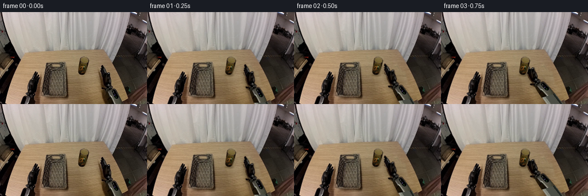
展开代码变化
--- 上一保存版本 +++ 本次保存版本 @@ -57,7 +57,13 @@ erase_cup=polygon_mask([(137.8,77),(153,77.4),(156.3,82),(155,92), (152.5,108.5),(148.9,112),(138.3,111.7),(133.8,107), (134.1,101),(136.1,89)],blur=.9) -texture_patch(erase_cup,24) +# A clean narrow strip between the basket and glass contains no occluders. +sx=120+(xx-134)*14/24 +sx=np.clip(sx,120,134) +lo=np.floor(sx).astype(int); hi=np.clip(lo+1,0,W-1); f=sx-lo +cup_patch=src[yy,lo]*(1-f[...,None])+src[yy,hi]*f[...,None] +ca=np.asarray(erase_cup)/255. +clean=clean*(1-ca[...,None])+cup_patch*ca[...,None] # Erase hand plus cast shadow: unobstructed wood is available to its left. erase_arm=polygon_mask([(172.3,92),(179.1,90),(185.8,101), (193.8,103),(197.1,118),(198.7,126),(205.1,132), @@ -66,7 +72,8 @@ a=np.asarray(erase_arm)/255. patch=src[yy,np.clip(xx-42,0,W-1)].copy() # Use a second sampling offset above the basket: x-42 here is clean. -patch[yy<113]=src[yy[yy<113],np.clip(xx[yy<113]-19,0,W-1)] +topx=120+np.mod(xx-170,14) +patch[yy<113]=src[yy[yy<113],topx[yy<113]] # A planar wood edge remains fixed when the forearm swings away. floor=src[yy,np.clip(xx+29,0,W-1)].copy() # Use the same undisturbed floor beyond the original tabletop corner.
候选 03播放与检查图
点击播放 · 原生 RGB 像素
展开代码变化
--- 上一保存版本
+++ 本次保存版本
@@ -87,13 +87,18 @@
canvas_size=(320,270)
robot=Image.new('RGBA',canvas_size)
robot.paste(original,(0,0),arm_mask)
-rd=ImageDraw.Draw(robot)
-# Housing longitudinal edges at the image boundary, extending below it.
-rd.polygon([(190,159),(213,159),(250,258),(227,267)], fill=(76,78,69,255))
-rd.polygon([(190,159),(195,159),(233,264),(227,267)], fill=(128,130,117,255))
-rd.line([(191,160),(228,266)], fill=(151,150,137,255), width=2)
-rd.line([(211,160),(248,260)], fill=(32,36,31,255), width=3)
-# Repaste the observed portion over the generated hidden continuation.
+# Extrude the last observed metal cross-section along its rigid axis. This
+# preserves the metallic bands at the image boundary without a color seam.
+ra=np.asarray(robot).copy()
+seed=np.asarray(robot)[159].astype(float)
+for y in range(160,canvas_size[1]):
+ for x in range(canvas_size[0]):
+ u=x-(y-159)*.365
+ if 0 <= u < canvas_size[0]-1:
+ left=int(u); f=u-left
+ col=seed[left]*(1-f)+seed[left+1]*f
+ ra[y,x]=np.uint8(np.clip(col,0,255))
+robot=Image.fromarray(ra,'RGBA')
robot.paste(original,(0,0),arm_mask)
robot=robot.resize((canvas_size[0]*S,canvas_size[1]*S),Image.Resampling.BICUBIC)
@@ -188,7 +193,18 @@
# behind it. This ordering makes the glass visibly enclosed in the grip.
out=Image.alpha_composite(out,thumb_pose((wx,wy),angle,closure))
out=out.convert('RGB').resize((W,H),Image.Resampling.LANCZOS)
- frames.append(np.asarray(out,dtype=np.uint8))
+ # Pixels beyond any changed object remain exactly from the fixed camera.
+ active=np.maximum(np.asarray(erase_arm),np.asarray(erase_cup))
+ active=np.maximum(active,np.asarray(arm.getchannel('A').resize((W,H),Image.Resampling.LANCZOS)))
+ active=np.maximum(active,np.asarray(move_cup(dx,dy).getchannel('A').resize((W,H),Image.Resampling.LANCZOS)))
+ active=np.maximum(active,np.asarray(thumb_pose((wx,wy),angle,closure).getchannel('A').resize((W,H),Image.Resampling.LANCZOS)))
+ active=np.maximum(active,np.asarray(arm_shadow.getchannel('A').resize((W,H),Image.Resampling.LANCZOS)))
+ # Include the small glass contact shadow.
+ sh=np.asarray(ellipse_layer(shadow_x,shadow_y,10,5,255,2).getchannel('A').resize((W,H),Image.Resampling.LANCZOS))
+ active=np.maximum(active,sh)
+ region=np.asarray(Image.fromarray(active).filter(ImageFilter.MaxFilter(7)))>0
+ final=np.where(region[...,None],np.asarray(out),np.asarray(original))
+ frames.append(final.astype(np.uint8))
frames=np.stack(frames)
assert np.array_equal(frames[0],np.asarray(original))
artifact_io.save(frames,ROOT)
候选 04播放与检查图
可观测工具轨迹
实际执行的命令与返回图片。
命令 1exit 0
/bin/bash -lc "ls -la; cat prompt.txt; printf '\\n---RULES---\\n'; cat GENERATION_RULES.md"
命令 2exit 0
/bin/bash -lc 'cat task_spec.json; cat artifact_io.py'
命令 3exit 0
/bin/bash -lc "python - <<'PY'
from PIL import Image
im=Image.open('first_frame.png'); print(im.size)
im.resize((1024,640)).save('.tmp/zoom.png')
PY"命令 4exit 0
/bin/bash -lc "python - <<'PY'
from PIL import Image
im=Image.open('first_frame.png'); im.crop((130,72,223,160)).resize((558,528)).save('.tmp/right.png'); im.crop((73,77,120,150)).resize((282,438)).save('.tmp/basket.png')
PY"命令 5exit 0
/bin/bash -lc "python - <<'PY'
from PIL import Image,ImageDraw
im=Image.open('first_frame.png').resize((1024,640)); d=ImageDraw.Draw(im)
for x in range(130,221,5):
d.line((x*4,72*4,x*4,640),fill=(250,80,80),width=1);d.text((x*4+1,72*4),str(x), fill=(255,255,255))
for y in range(75,161,5):
d.line((130*4,y*4,221*4,y*4),fill=(250,80,80),width=1);d.text((220*4,y*4),str(y), fill=(255,255,255))
im.crop((520,280,940,640)).save('.tmp/grid.png')
PY"命令 6exit 0
/bin/bash -lc "cat > generate.py <<'PY'
\"\"\"Pixel-based, rigid-body pick-and-place animation from the supplied image.\"\"\"
from pathlib import Path
import math
import numpy as np
from PIL import Image, ImageDraw, ImageFilter
import artifact_io
ROOT=Path(__file__).resolve().parent
W,H=256,160
S=4
original=Image.open(ROOT/'first_frame.png').convert('RGB')
src=np.asarray(original).astype(float)
def polygon_mask(points, size=(W,H), blur=0):
m=Image.new('L',(size[0]*S,size[1]*S))
ImageDraw.Draw(m).polygon([(round(x*S),round(y*S)) for x,y in points],fill=255)
if blur: m=m.filter(ImageFilter.GaussianBlur(blur*S))
return m.resize(size,Image.Resampling.LANCZOS)
# All outlines are hand-defined from the input image; no external assets.
arm_outline=[(177.2,91.8),(179,92.5),(182.2,97.8),(184,101.2),
(185.6,107.8),(187.3,105.8),(190.4,104.7),(191.9,105.4),
(192,111.3),(193.1,115.2),(193.5,121.8),(191.8,125.5),
(194.9,127.9),(195.9,130.8),(200.8,133.6),(204.1,138.9),
(208.4,148.8),(213.1,160),(189.6,160),(187.3,152),
(185.2,145.7),(184,139.4),(181.5,136.5),(177.2,133.3),
(176.7,131),(181.2,131),(180.6,127.7),(179.1,124.9),
(177.3,118.6),(176.9,112.5),(174.8,109.8),(174.6,106.2),
(176.2,106.7),(175.3,101.9),(174.9,99.5),(176.1,98.1),
(177.5,100.4),(176.8,96.8),(175.9,95.5),(176.4,93.5)]
cup_outline=[(140,80.2),(142.8,78.2),(146.7,77.7),(150.8,79),
(153.8,81.4),(155,84.4),(153.8,90.3),(152.4,96.8),
(150.4,104.2),(148.5,107.2),(144.8,109.1),(140.4,108.9),
(137.5,107.1),(136.1,104.2),(136.6,99.7),(137.8,93.5),
(138.6,87.8),(139,83.5)]
arm_mask=polygon_mask(arm_outline)
cup_mask=polygon_mask(cup_outline)
# Restore the exposed wood under the objects with same-row wood-grain samples.
# Small feathered texture patches match the stationary tabletop illumination.
clean=src.copy()
yy,xx=np.mgrid[:H,:W]
# The right forearm is over the angled table edge at the bottom of the image.
table_boundary=223-(yy-148)*(27/12)
is_table=(yy <= 148) | (xx < table_boundary)
def texture_patch(region, donor_dx):
global clean
sx=np.clip(xx+donor_dx,0,W-1)
patch=src[yy,sx].copy()
# Match local table shading; color change across the top is very small.
patch+= np.array([0.8,0.8,0.5])
alpha=np.asarray(region).astype(float)/255
clean=clean*(1-alpha[...,None])+np.clip(patch,0,255)*alpha[...,None]
# Cup shadow and silhouette use unoccupied tabletop immediately to the right.
erase_cup=polygon_mask([(137.8,77),(153,77.4),(156.3,82),(155,92),
(152.5,108.5),(148.9,112),(138.3,111.7),(133.8,107),
(134.1,101),(136.1,89)],blur=.9)
texture_patch(erase_cup,24)
# Erase hand plus cast shadow: unobstructed wood is available to its left.
erase_arm=polygon_mask([(172.3,92),(179.1,90),(185.8,101),
(193.8,103),(197.1,118),(198.7,126),(205.1,132),
(211.8,144),(216.7,160),(179.5,160),(177,145),
(174.8,137),(171.3,120),(170.1,105)],blur=1.1)
a=np.asarray(erase_arm)/255.
patch=src[yy,np.clip(xx-42,0,W-1)].copy()
# Use a second sampling offset above the basket: x-42 here is clean.
patch[yy<113]=src[yy[yy<113],np.clip(xx[yy<113]-19,0,W-1)]
# A planar wood edge remains fixed when the forearm swings away.
floor=src[yy,np.clip(xx+29,0,W-1)].copy()
# Use the same undisturbed floor beyond the original tabletop corner.
patch=np.where(is_table[...,None],patch,floor)
clean=clean*(1-a[...,None])+patch*a[...,None]
background=Image.fromarray(np.uint8(np.clip(clean,0,255))).resize((W*S,H*S),Image.Resampling.BICUBIC)
# Rigid forearm: extend the same metal housing past the source image so that
# no cut-off edge can enter the view during rotation. The extension is hidden
# offscreen in the initial posture.
canvas_size=(320,270)
robot=Image.new('RGBA',canvas_size)
robot.paste(original,(0,0),arm_mask)
rd=ImageDraw.Draw(robot)
# Housing longitudinal edges at the image boundary, extending below it.
rd.polygon([(190,159),(213,159),(250,258),(227,267)], fill=(76,78,69,255))
rd.polygon([(190,159),(195,159),(233,264),(227,267)], fill=(128,130,117,255))
rd.line([(191,160),(228,266)], fill=(151,150,137,255), width=2)
rd.line([(211,160),(248,260)], fill=(32,36,31,255), width=3)
# Repaste the observed portion over the generated hidden continuation.
robot.paste(original,(0,0),arm_mask)
robot=robot.resize((canvas_size[0]*S,canvas_size[1]*S),Image.Resampling.BICUBIC)
cup=Image.new('RGBA',(W,H));cup.paste(original,(0,0),cup_mask)
cup=cup.resize((W*S,H*S),Image.Resampling.BICUBIC)
thumb_outline=[(188.4,105.7),(190.6,104.7),(192,105.4),(191.9,112),
(192.8,116),(192.5,121),(190.4,124.8),(187.4,124.7),
(186.3,121),(187.1,116),(187.4,110.4)]
thumb_mask=polygon_mask(thumb_outline)
thumb=Image.new('RGBA',(W,H));thumb.paste(original,(0,0),thumb_mask)
thumb=thumb.resize((W*S,H*S),Image.Resampling.BICUBIC)
# Image-plane rigid transformations; shape, markings and metal details remain
# fixed. A wrist rotation closes only the solid thumb element, not the arm.
pivot=(190.,133.)
def rigid(image, target, degrees, source_pivot=pivot):
t=math.radians(degrees); c,s=math.cos(t),math.sin(t)
px,py=source_pivot;tx,ty=target
# Inverse map from the output into the observed texture.
mat=(c,s,(px-c*tx-s*ty)*S,-s,c,(py+s*tx-c*ty)*S)
return image.transform((W*S,H*S),Image.Transform.AFFINE,mat,
resample=Image.Resampling.BICUBIC)
def move_cup(dx,dy):
return cup.transform((W*S,H*S),Image.Transform.AFFINE,
(1,0,-dx*S,0,1,-dy*S),Image.Resampling.BICUBIC)
def thumb_pose(target, angle, closure):
# Local rotation about the thumb hinge, then the common wrist transform.
hinge=(189.7,123.)
t=math.radians(angle); c,s=math.cos(t),math.sin(t)
hx,hy=hinge; px,py=pivot
th=(target[0]+c*(hx-px)-s*(hy-py),target[1]+s*(hx-px)+c*(hy-py))
return rigid(thumb,th,angle-closure,hinge)
def ellipse_layer(cx,cy,rx,ry,opacity,blur):
m=Image.new('L',(W*S,H*S));d=ImageDraw.Draw(m)
d.ellipse(((cx-rx)*S,(cy-ry)*S,(cx+rx)*S,(cy+ry)*S),fill=opacity)
m=m.filter(ImageFilter.GaussianBlur(blur*S))
shadow=Image.new('RGBA',(W*S,H*S),(45,33,13,0));shadow.putalpha(m)
return shadow
# Contact at frame 4, squeeze, lift, translate over basket, lower and release.
# Cup translations keep its upright cylindrical silhouette unchanged.
poses=[
# wrist x, wrist y, wrist angle, cup dx, cup dy, thumb closure, lift
(190,133,0,0,0,0,0),
(185,131,-3,0,0,0,0),
(177,128,-10,0,0,0,0),
(168,123,-17,0,0,0,0),
(162,120,-20,0,0,0,0),
(162,120,-20,0,0,9,0),
(161,112,-20,-1,-8,9,8),
(159,105,-20,-3,-15,9,15),
(149,106,-20,-13,-14,9,21),
(135,109,-20,-27,-11,9,21),
(121,116,-20,-41,-4,9,19),
(113,126,-20,-49,6,9,17),
(113,136,-20,-49,16,9,7),
(113,143,-20,-49,23,9,0),
(113,143,-20,-49,23,7,0),
(117,140,-17,-49,23,0,0),
(135,135,-12,-49,23,0,0),
(158,132,-7,-49,23,0,0),
(181,132,-2,-49,23,0,0),
(190,133,0,-49,23,0,0),
]
frames=[np.asarray(original,dtype=np.uint8)]
for i,p in enumerate(poses[1:],start=1):
wx,wy,angle,dx,dy,closure,lift=p
out=background.convert('RGBA')
# Cast contact shadow stays on the supporting plane and fades while lifted.
# For the placement half of the motion the plane is the woven tray floor.
if i<8:
shadow_x=143+dx;shadow_y=109
else:
shadow_x=143+dx;shadow_y=108+dy+lift
if i>=13:shadow_y=132
out=Image.alpha_composite(out,ellipse_layer(shadow_x,shadow_y,7.4+lift*.10,
2.7+lift*.035,int(75-lift*1.8),1.2+lift*.04))
# Consistent faint hand shadow on the tabletop, excluding the basket so its
# weave remains readable. It is distinct from the rigid visible surfaces.
arm=rigid(robot,(wx,wy),angle)
shadow_alpha=arm.getchannel('A').filter(ImageFilter.GaussianBlur(2.6*S))
shadow_alpha=shadow_alpha.point(lambda z:int(z*.19))
shifted=Image.new('L',(W*S,H*S));shifted.paste(shadow_alpha,(-3*S,4*S))
arm_shadow=Image.new('RGBA',(W*S,H*S),(48,36,16,0));arm_shadow.putalpha(shifted)
out=Image.alpha_composite(out,arm_shadow)
out=Image.alpha_composite(out,arm)
out=Image.alpha_composite(out,move_cup(dx,dy))
# Thumb touches the near/right side of the glass, while the long jaws are
# behind it. This ordering makes the glass visibly enclosed in the grip.
out=Image.alpha_composite(out,thumb_pose((wx,wy),angle,closure))
out=out.convert('RGB').resize((W,H),Image.Resampling.LANCZOS)
frames.append(np.asarray(out,dtype=np.uint8))
frames=np.stack(frames)
assert np.array_equal(frames[0],np.asarray(original))
artifact_io.save(frames,ROOT)
# Keep inspection of the reconstructed stationary scene as a local candidate.
background.resize((W,H),Image.Resampling.LANCZOS).save(ROOT/'.tmp'/'clean_plate.png')
PY
python generate.py"命令 7exit 0
/bin/bash -lc "python - <<'PY'
p='generate.py'
s=open(p).read();s=s.replace('texture_patch(erase_cup,24)','''# A clean narrow strip between the basket and glass contains no occluders.
sx=120+(xx-134)*14/24
sx=np.clip(sx,120,134)
lo=np.floor(sx).astype(int); hi=np.clip(lo+1,0,W-1); f=sx-lo
cup_patch=src[yy,lo]*(1-f[...,None])+src[yy,hi]*f[...,None]
ca=np.asarray(erase_cup)/255.
clean=clean*(1-ca[...,None])+cup_patch*ca[...,None]''')
s=s.replace('patch[yy<113]=src[yy[yy<113],np.clip(xx[yy<113]-19,0,W-1)]','''topx=120+np.mod(xx-170,14)
patch[yy<113]=src[yy[yy<113],topx[yy<113]]''')
open(p,'w').write(s)
PY
python generate.py"命令 8exit 0
/bin/bash -lc "python - <<'PY'
from PIL import Image
for k in (1,5,11,14,19):
Image.open(f'frames/{k:02}.png').resize((1024,640)).save(f'.tmp/frame{k}.png')
PY"命令 9exit 0
/bin/bash -lc "python - <<'PY'
p='generate.py';s=open(p).read();a=s.index('rd=ImageDraw.Draw(robot)');b=s.index('robot=robot.resize',a)
s=s[:a]+'''# Extrude the last observed metal cross-section along its rigid axis. This
# preserves the metallic bands at the image boundary without a color seam.
ra=np.asarray(robot).copy()
seed=np.asarray(robot)[159].astype(float)
for y in range(160,canvas_size[1]):
for x in range(canvas_size[0]):
u=x-(y-159)*.365
if 0 <= u < canvas_size[0]-1:
left=int(u); f=u-left
col=seed[left]*(1-f)+seed[left+1]*f
ra[y,x]=np.uint8(np.clip(col,0,255))
robot=Image.fromarray(ra,'RGBA')
robot.paste(original,(0,0),arm_mask)
''' +s[b:]
s=s.replace(\"out=out.convert('RGB').resize((W,H),Image.Resampling.LANCZOS)\\n frames.append(np.asarray(out,dtype=np.uint8))\",'''out=out.convert('RGB').resize((W,H),Image.Resampling.LANCZOS)
# Pixels beyond any changed object remain exactly from the fixed camera.
active=np.maximum(np.asarray(erase_arm),np.asarray(erase_cup))
active=np.maximum(active,np.asarray(arm.getchannel('A').resize((W,H),Image.Resampling.LANCZOS)))
active=np.maximum(active,np.asarray(move_cup(dx,dy).getchannel('A').resize((W,H),Image.Resampling.LANCZOS)))
active=np.maximum(active,np.asarray(thumb_pose((wx,wy),angle,closure).getchannel('A').resize((W,H),Image.Resampling.LANCZOS)))
active=np.maximum(active,np.asarray(arm_shadow.getchannel('A').resize((W,H),Image.Resampling.LANCZOS)))
# Include the small glass contact shadow.
sh=np.asarray(ellipse_layer(shadow_x,shadow_y,10,5,255,2).getchannel('A').resize((W,H),Image.Resampling.LANCZOS))
active=np.maximum(active,sh)
region=np.asarray(Image.fromarray(active).filter(ImageFilter.MaxFilter(7)))>0
final=np.where(region[...,None],np.asarray(out),np.asarray(original))
frames.append(final.astype(np.uint8))''')
open(p,'w').write(s)
PY
python generate.py
python - <<'PY'
from PIL import Image
Image.open('frames/05.png').resize((1024,640)).save('.tmp/frame5_revised.png')
PY"命令 10exit 0
/bin/bash -lc "command -v ffmpeg || true; python - <<'PY'
import numpy as np
from PIL import Image
p=np.load('pixels.npz')['pixels']
a=np.array(Image.open('first_frame.png').convert('RGB'),dtype=np.uint32)
expected=(a[:,:,0]<<16)|(a[:,:,1]<<8)|a[:,:,2]
print('Stored video tensor:',p.shape)
print('First frame identical:',np.array_equal(p[:,:,0],expected))
print('RGB frame files:',len(list(__import__('pathlib').Path('frames').glob('*.png'))))
PY"视觉工具实际返回图片 1
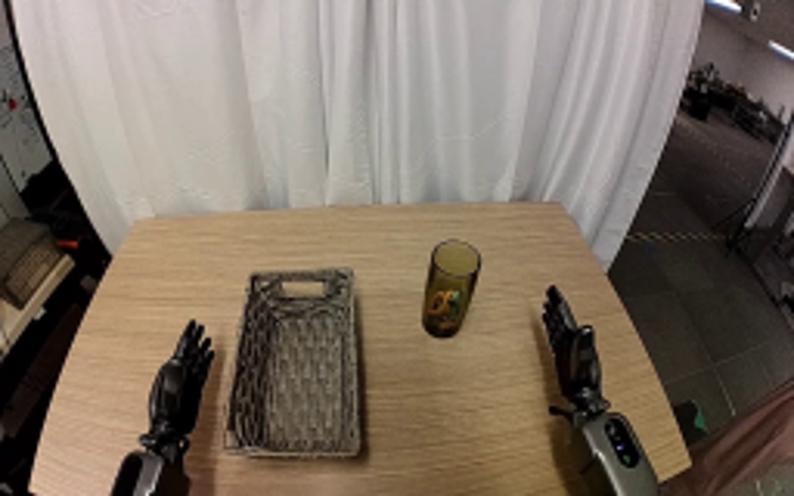
视觉工具实际返回图片 2
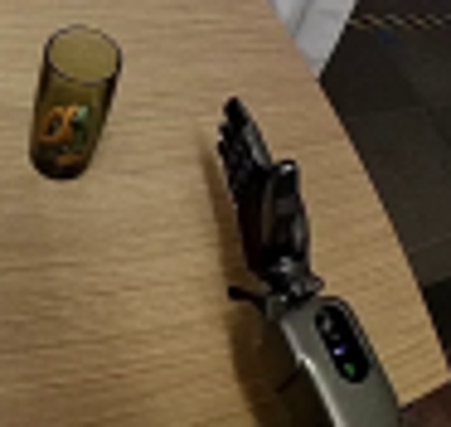
视觉工具实际返回图片 3
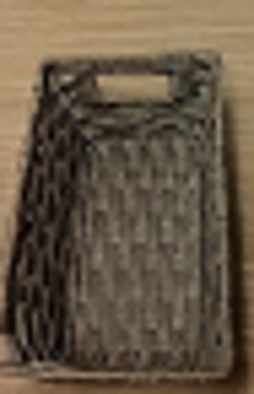
视觉工具实际返回图片 4
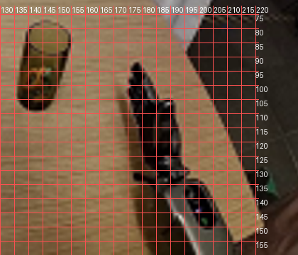
视觉工具实际返回图片 5
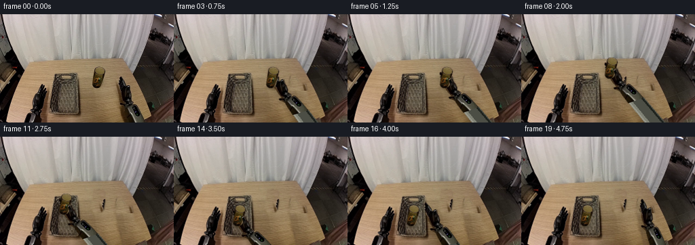
视觉工具实际返回图片 6
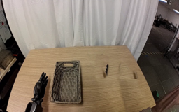
视觉工具实际返回图片 7
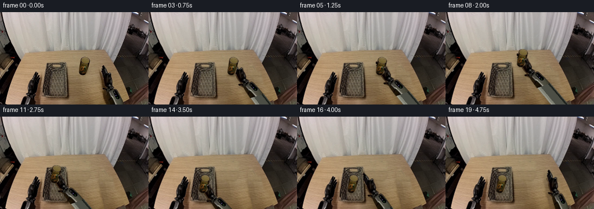
视觉工具实际返回图片 8
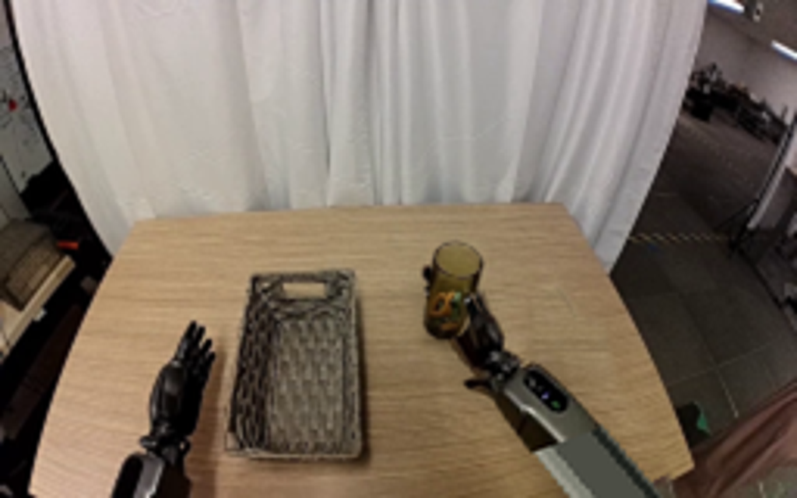
视觉工具实际返回图片 9
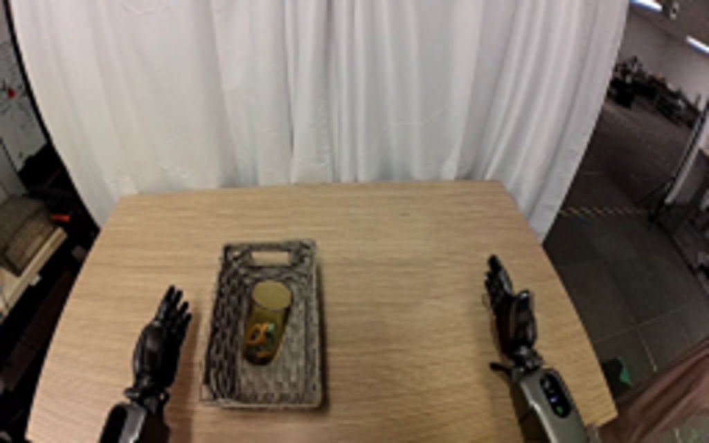
视觉工具实际返回图片 10
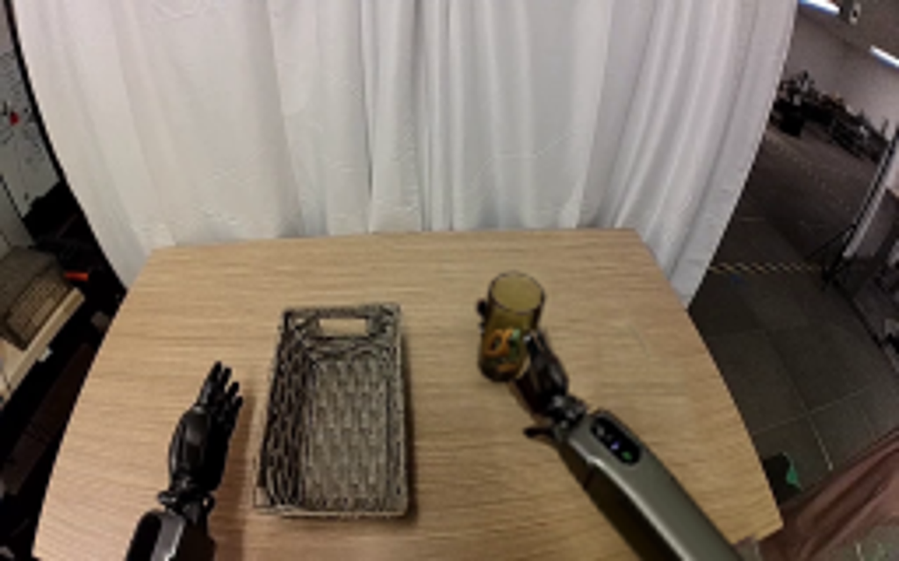
视觉工具实际返回图片 11
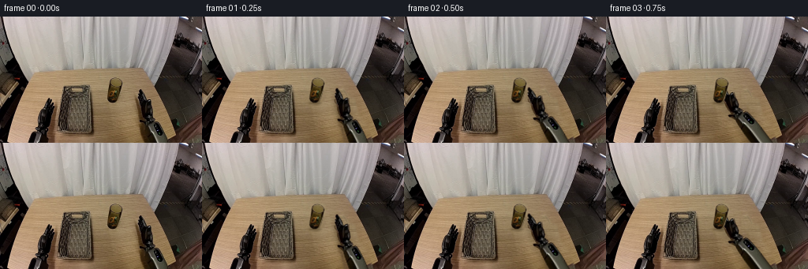
保存候选 4 份；完成命令 10 次；可验证图片返回 11 张。原始 API 响应与完整日志保留在本地。